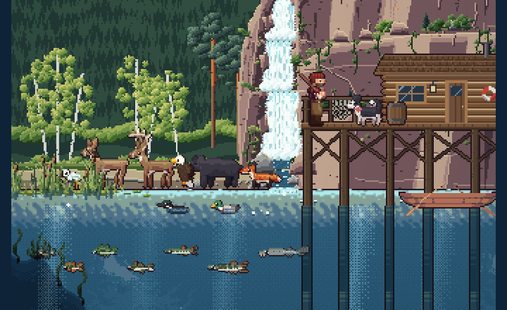
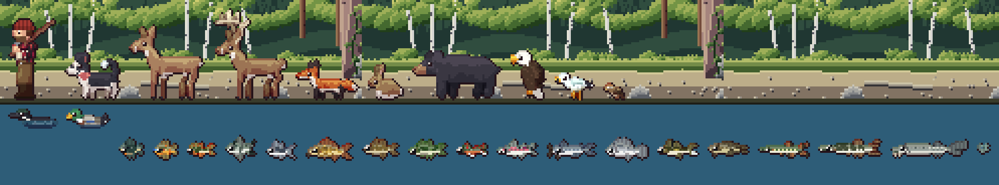

<title>Study 13 Scale</title>
<meta name="claude:viewport-fit-sides" content="cover">
<link rel="preconnect" href="https://fonts.googleapis.com">
<link rel="stylesheet" href="https://fonts.googleapis.com/css2?family=Pixelify+Sans:wght@500;700&family=Source+Serif+4:opsz,wght@8..60,400;8..60,600&family=JetBrains+Mono:wght@400;600&display=swap">
<style>
/* Layout: a single reading column like a field-station report, with full-bleed image plates and swatch strips drawn from the lake itself. */
:root {
  --bg: #eef1ec;
  --panel: #e2e8e2;
  --ink: #1b2826;
  --muted: #566764;
  --line: #c3cec7;
  --accent: #a24f45;
  --pine: #2d5747;
  --display: "Pixelify Sans", "Courier New", monospace;
  --body: "Source Serif 4", Georgia, "Times New Roman", serif;
  --mono: "JetBrains Mono", ui-monospace, Menlo, Consolas, monospace;
}
@media (prefers-color-scheme: dark) {
  :root:not([data-theme="light"]) {
    --bg: #0f1918; --panel: #172423; --ink: #e2e9e4; --muted: #97a9a4; --line: #2a3b39;
    --accent: #e29a8b; --pine: #86bba4; color-scheme: dark;
  }
}
:root[data-theme="dark"] {
  --bg: #0f1918; --panel: #172423; --ink: #e2e9e4; --muted: #97a9a4; --line: #2a3b39;
  --accent: #e29a8b; --pine: #86bba4; color-scheme: dark;
}
* { box-sizing: border-box; }
body {
  background: var(--bg); color: var(--ink); font-family: var(--body); font-size: 17px; line-height: 1.6;
  padding-left: max(16px, env(safe-area-inset-left, 0px)); padding-right: max(16px, env(safe-area-inset-right, 0px));
  padding-block: 28px 64px;
}
main { max-width: 720px; margin: 0 auto; display: flex; flex-direction: column; gap: 44px; }
h1, h2, h3 { font-family: var(--display); font-weight: 700; line-height: 1.15; text-wrap: balance; margin: 0; }
h1 { font-size: clamp(32px, 7vw, 46px); letter-spacing: 0.5px; }
h2 { font-size: 26px; color: var(--pine); }
h3 { font-size: 19px; font-weight: 500; }
p { margin: 0; max-width: 65ch; }
section { display: flex; flex-direction: column; gap: 16px; }
.eyebrow { font-family: var(--mono); font-size: 12px; letter-spacing: 1.5px; text-transform: uppercase; color: var(--muted); }
.lede { font-size: 19px; }
a { color: var(--accent); }
figure { margin: 0; display: flex; flex-direction: column; gap: 8px; }
figure img { width: 100%; image-rendering: pixelated; border-radius: 4px; display: block; }
figcaption { font-size: 14px; color: var(--muted); }
.stats { display: grid; grid-template-columns: repeat(auto-fit, minmax(150px, 1fr)); gap: 12px; }
.stat { border-top: 3px solid var(--pine); padding-top: 8px; display: flex; flex-direction: column; gap: 2px; }
.stat b { font-family: var(--display); font-size: 30px; font-weight: 700; font-variant-numeric: tabular-nums; }
.stat span { font-size: 14px; color: var(--muted); }
ol.findings { margin: 0; padding-left: 1.4em; display: flex; flex-direction: column; gap: 12px; }
ol.findings li::marker { font-family: var(--mono); color: var(--accent); }
ol.findings b { font-weight: 600; }
.meter { display: grid; grid-template-columns: 9.5em 1fr; gap: 6px 12px; align-items: center; font-size: 14px; }
.meter .bars { display: flex; flex-direction: column; gap: 3px; }
.bar { height: 10px; border-radius: 2px; background: var(--line); position: relative; }
.bar i { position: absolute; inset: 0 auto 0 0; border-radius: 2px; }
.bar.ours i { background: var(--pine); }
.bar.pack i { background: var(--accent); }
.legend { display: flex; gap: 16px; font-size: 13px; color: var(--muted); flex-wrap: wrap; }
.legend span::before { content: ""; display: inline-block; width: 10px; height: 10px; border-radius: 2px; margin-right: 6px; vertical-align: -1px; }
.legend .l-ours::before { background: var(--pine); }
.legend .l-pack::before { background: var(--accent); }
.skies { display: flex; flex-direction: column; gap: 6px; }
.sky { display: grid; grid-template-columns: 7.5em 1fr; align-items: center; gap: 12px; font-size: 14px; }
.sky div { height: 30px; border-radius: 3px; }
.swatches { display: grid; grid-template-columns: repeat(auto-fit, minmax(200px, 1fr)); gap: 14px; }
.sw { display: flex; flex-direction: column; gap: 6px; min-width: 0; }
.sw .strip { display: flex; height: 34px; border-radius: 3px; overflow: hidden; }
.sw .strip i { flex: 1; }
.sw b { font-weight: 600; font-size: 15px; }
.sw span { font-size: 13px; color: var(--muted); font-family: var(--mono); overflow-wrap: anywhere; }
.lessons { display: grid; grid-template-columns: repeat(auto-fit, minmax(250px, 1fr)); gap: 18px 24px; }
.lessons div { display: flex; flex-direction: column; gap: 4px; }
.lessons h3 { color: var(--accent); }
.lessons p { font-size: 15px; }
ol.rules { margin: 0; padding: 0; list-style: none; counter-reset: r; display: flex; flex-direction: column; border-top: 1px solid var(--line); }
ol.rules li { counter-increment: r; display: grid; grid-template-columns: 2.4em 1fr; gap: 8px; padding: 12px 0; border-bottom: 1px solid var(--line); }
ol.rules li::before { content: counter(r, decimal-leading-zero); font-family: var(--mono); color: var(--muted); font-size: 14px; padding-top: 3px; }
.qs { display: flex; flex-direction: column; gap: 14px; }
.q { background: var(--panel); border-radius: 6px; padding: 16px 18px; display: flex; flex-direction: column; gap: 8px; }
.q h3 { font-size: 18px; }
.q ul { margin: 0; padding-left: 1.2em; font-size: 15px; display: flex; flex-direction: column; gap: 4px; }
.q .rec { font-size: 14px; color: var(--pine); font-family: var(--mono); }
.next { font-size: 15px; color: var(--muted); }
code { font-family: var(--mono); font-size: 0.85em; }
.viewer { display: flex; flex-direction: column; gap: 10px; }
.viewer img { width: 100%; height: auto; image-rendering: pixelated; border-radius: 4px; display: block; aspect-ratio: 1200 / 296; background: var(--panel); }
.pick { display: flex; flex-wrap: wrap; gap: 6px; }
.pick button { font: 600 14px var(--mono); padding: 8px 12px; border-radius: 4px; border: 1px solid var(--line); background: var(--panel); color: var(--ink); cursor: pointer; min-width: 44px; }
.pick button[aria-pressed="true"] { background: var(--pine); color: var(--bg); border-color: var(--pine); }
.pick button:focus-visible { outline: 2px solid var(--accent); outline-offset: 2px; }
.cap { font-size: 15px; min-height: 3em; }
.cards { display: grid; grid-template-columns: repeat(auto-fit, minmax(210px, 1fr)); gap: 16px; }
.card { display: flex; flex-direction: column; gap: 6px; }
.card h3 { color: var(--accent); }
.card p { font-size: 15px; }
.card ul { margin: 0; padding-left: 1.1em; font-size: 14px; color: var(--muted); display: flex; flex-direction: column; gap: 3px; }
.motion { display: grid; grid-template-columns: repeat(4, 1fr); gap: 10px; }
.motion figure img { aspect-ratio: 390 / 630; height: auto; }
.wide { overflow-x: auto; }
.wide img { max-width: none; width: 1824px; height: auto; image-rendering: pixelated; }
@media (max-width: 520px) { .motion { grid-template-columns: repeat(2, 1fr); } }
table { border-collapse: collapse; font-size: 13px; width: 100%; }
th, td { text-align: left; padding: 4px 8px; border-bottom: 1px solid color-mix(in srgb, currentColor 15%, transparent); white-space: nowrap; }
td.big { font-weight: 700; }
.x { opacity: 0.6; }
.tablewrap { overflow-x: auto; }
</style>

<main>
  <header style="display:flex;flex-direction:column;gap:12px">
    <span class="eyebrow">Reel It In · Study 13 · 22 Oct 2026</span>
    <h1>Scale beside the angler</h1>
    <p class="lede">The angler is 39 pixels tall, a man of about 5 ft 10 (178 cm), so the game's scale is 0.22 pixels to the centimetre. I measured every animal against him and against its real adult size. The deer, buck and bear are close to true. Everything smaller has been drawn big so it reads: Olive and the fox at nearly twice life size, the hare and the gull nearly three times, the sparrow four, the fish three to four.</p>
  </header>

  <section>
    <span class="eyebrow">The measurements</span>
    <h2>Real size, now, and each version (length × height, in pixels)</h2>
    <div class="tablewrap"><table><thead><tr><th>Animal</th><th>Real size</th><th>True scale, px</th><th>Now, px</th><th>A</th><th>B</th><th>C</th></tr></thead><tbody><tr><td>Olive (husky mix)</td><td>95 cm × 70 cm tall</td><td>20.8 × 15.3</td><td class="big">32 × 28 <span class="x">(1.5×)</span></td><td>19 × 17</td><td>19 × 17</td><td>26 × 23</td></tr>
<tr><td>White-tailed doe</td><td>170 cm × 150 cm tall</td><td>37.2 × 32.9</td><td>38 × 38 <span class="x">(1.0×)</span></td><td>35 × 35</td><td>35 × 35</td><td>36 × 36</td></tr>
<tr><td>White-tailed buck</td><td>185 cm × 185 cm tall</td><td>40.5 × 40.5</td><td>39 × 48 <span class="x">(1.0×)</span></td><td>36 × 46</td><td>36 × 46</td><td>35 × 44</td></tr>
<tr><td>Red fox</td><td>105 cm × 55 cm tall</td><td>23.0 × 12.1</td><td class="big">39 × 24 <span class="x">(1.7×)</span></td><td>21 × 13</td><td>23 × 14</td><td>30 × 19</td></tr>
<tr><td>Snowshoe hare (sitting)</td><td>45 cm × 40 cm tall</td><td>9.9 × 8.8</td><td class="big">26 × 26 <span class="x">(2.6×)</span></td><td>9 × 9</td><td>12 × 13</td><td>16 × 17</td></tr>
<tr><td>Black bear (on all fours)</td><td>165 cm × 90 cm tall</td><td>36.2 × 19.7</td><td>40 × 21 <span class="x">(1.1×)</span></td><td>37 × 21</td><td>37 × 21</td><td>43 × 23</td></tr>
<tr><td>Ring-billed gull (standing)</td><td>46 cm × 30 cm tall</td><td>10.1 × 6.6</td><td class="big">29 × 20 <span class="x">(2.9×)</span></td><td>9 × 7</td><td>14 × 10</td><td>18 × 12</td></tr>
<tr><td>Bald eagle (perched)</td><td>35 cm × 80 cm tall</td><td>7.7 × 17.5</td><td class="big">20 × 30 <span class="x">(2.6×)</span></td><td>11 × 17</td><td>11 × 17</td><td>16 × 23</td></tr>
<tr><td>Song sparrow</td><td>15 cm × 13 cm tall</td><td>3.3 × 2.8</td><td class="big">13 × 10 <span class="x">(3.9×)</span></td><td>3 × 3</td><td>11 × 9</td><td>9 × 7</td></tr>
<tr><td>Mallard (swimming)</td><td>58 cm × 25 cm tall</td><td>12.7 × 5.5</td><td class="big">23 × 10 <span class="x">(1.8×)</span></td><td>12 × 5</td><td>14 × 6</td><td>20 × 8</td></tr>
<tr><td>Common loon (swimming)</td><td>80 cm × 25 cm tall</td><td>17.5 × 5.5</td><td class="big">33 × 11 <span class="x">(1.9×)</span></td><td>17 × 6</td><td>17 × 6</td><td>23 × 8</td></tr>
<tr><td>Bluegill</td><td>20 cm</td><td>4.4</td><td class="big">17 <span class="x">(3.9×)</span></td><td>4</td><td>10</td><td>10</td></tr>
<tr><td>Pumpkinseed</td><td>18 cm</td><td>3.9</td><td class="big">17 <span class="x">(4.4×)</span></td><td>4</td><td>10</td><td>10</td></tr>
<tr><td>Yellow perch</td><td>25 cm</td><td>5.5</td><td class="big">20 <span class="x">(3.6×)</span></td><td>5</td><td>11</td><td>12</td></tr>
<tr><td>Black crappie</td><td>25 cm</td><td>5.5</td><td class="big">20 <span class="x">(3.6×)</span></td><td>5</td><td>11</td><td>12</td></tr>
<tr><td>White bass</td><td>30 cm</td><td>6.6</td><td class="big">22 <span class="x">(3.3×)</span></td><td>7</td><td>11</td><td>13</td></tr>
<tr><td>Common carp</td><td>60 cm</td><td>13.1</td><td class="big">32 <span class="x">(2.4×)</span></td><td>13</td><td>15</td><td>20</td></tr>
<tr><td>Smallmouth bass</td><td>40 cm</td><td>8.8</td><td class="big">24 <span class="x">(2.7×)</span></td><td>9</td><td>12</td><td>16</td></tr>
<tr><td>Largemouth bass</td><td>45 cm</td><td>9.9</td><td class="big">27 <span class="x">(2.7×)</span></td><td>10</td><td>13</td><td>17</td></tr>
<tr><td>Brook trout</td><td>30 cm</td><td>6.6</td><td class="big">23 <span class="x">(3.5×)</span></td><td>7</td><td>11</td><td>13</td></tr>
<tr><td>Rainbow trout</td><td>50 cm</td><td>11.0</td><td class="big">26 <span class="x">(2.4×)</span></td><td>11</td><td>13</td><td>18</td></tr>
<tr><td>Channel catfish</td><td>60 cm</td><td>13.1</td><td class="big">30 <span class="x">(2.3×)</span></td><td>13</td><td>15</td><td>20</td></tr>
<tr><td>Freshwater drum</td><td>50 cm</td><td>11.0</td><td class="big">26 <span class="x">(2.4×)</span></td><td>11</td><td>13</td><td>18</td></tr>
<tr><td>Walleye</td><td>50 cm</td><td>11.0</td><td class="big">29 <span class="x">(2.6×)</span></td><td>11</td><td>13</td><td>18</td></tr>
<tr><td>Burbot</td><td>50 cm</td><td>11.0</td><td class="big">28 <span class="x">(2.5×)</span></td><td>11</td><td>13</td><td>18</td></tr>
<tr><td>Northern pike</td><td>75 cm</td><td>16.4</td><td class="big">36 <span class="x">(2.2×)</span></td><td>16</td><td>16</td><td>23</td></tr>
<tr><td>Muskellunge</td><td>110 cm</td><td>24.1</td><td class="big">42 <span class="x">(1.7×)</span></td><td>24</td><td>24</td><td>29</td></tr>
<tr><td>Lake sturgeon</td><td>150 cm</td><td>32.9</td><td>44 <span class="x">(1.3×)</span></td><td>33</td><td>33</td><td>35</td></tr>
<tr><td>Shiner (minnow)</td><td>7 cm</td><td>1.5</td><td class="big">12 <span class="x">(8.0×)</span></td><td>4</td><td>9</td><td>5</td></tr></tbody></table></div>
    <p class="cap">"Now" in bold is more than one and a half times life size. Fish are their length at a typical adult catch. Real sizes are from field guides and state DNR species pages.</p>
  </section>

  <section class="viewer">
    <span class="eyebrow">In the game at midday</span>
    <div class="pick" role="group" aria-label="Version">
      <button data-v="now" aria-pressed="false">Now</button>
      <button data-v="A" aria-pressed="false">A</button>
      <button data-v="B" aria-pressed="false">B</button>
      <button data-v="C" aria-pressed="true">C</button>
    </div>
    
    <p class="cap" id="cap"></p>
    
    <p class="cap">Everyone beside the angler: Olive, the doe, buck, fox, hare, bear, eagle, gull and sparrow on the sand; the loon and mallard on the water; all seventeen fish and the minnow below.</p>
  </section>

  <section>
    <span class="eyebrow">The three versions</span>
    <h2>How true to make it</h2>
    <div class="cards">
      <div class="card"><h3>A &middot; True scale</h3><p>Every animal at life size beside him.</p><ul><li>Honest: Olive comes to his thigh, the hare is a small brown lump, the sparrow is three pixels</li><li>The small fish are four or five pixels: hard to tell apart, hard to see on the line</li></ul></div>
      <div class="card"><h3>B &middot; True, with a floor</h3><p>Life size for everything big enough to read (about 16 pixels and up). Below that, sizes are lifted toward a readable minimum (8 pixels plus half the true size), still in order.</p><ul><li>The big animals exactly true; Olive, the fox and the ducks true too</li><li>The smallest ones still small, a little larger than life</li></ul></div>
      <div class="card"><h3>C &middot; Gently compressed</h3><p>Every size pulled toward the deer's along one smooth curve, the way many cozy games keep small animals readable. Everything stays in true order: the sparrow smaller than the hare, the hare than the fox, the fox than Olive.</p><ul><li>Everyone readable, nothing as oversized as now</li><li>Small animals are still about 1.5 to 2.5 times life size</li></ul></div>
    </div>
  </section>

  <section>
    <span class="eyebrow">How it's done</span>
    <h2>Redrawn at size, not shrunk</h2>
    <p>Each animal is drawn again at its new size from the same shapes (every point and width scaled), so edges stay clean and nothing gets blurry. Animals drawn very small get a one-pixel eye. Once you pick, the game's sheets (walks, idles, flight, swimming) are rebuilt at those sizes, and the places they stand and fly are adjusted to suit.</p>
  </section>

  <section>
    <span class="eyebrow">Your call</span>
    <h2>Pick one, or mix</h2>
    <p>Tell me A, B or C, or a mix (true scale for land animals and birds but the floor for fish, say).</p>
  </section>
</main>
<script>
(function () {
  var notes = {
    now: "Now: deer, buck and bear near true size; Olive and the fox nearly twice it; the hare and the gull nearly three times; the sparrow four.",
    A: "A: everyone at true scale beside him.",
    B: "B: true scale, with small animals lifted toward a readable floor.",
    C: "C: gently compressed toward the deer's size, in true order."
  };
  var v = "C";
  function show() {
    document.getElementById("game").src = "study13/" + v + "-game.png";
    var l = document.getElementById("lineup");
    l.style.display = v === "now" ? "none" : "";
    if (v !== "now") l.src = "study13/" + v + "-lineup.png";
    document.getElementById("cap").textContent = notes[v];
    document.querySelectorAll("[data-v]").forEach(function (b) { b.setAttribute("aria-pressed", b.dataset.v === v); });
  }
  document.querySelectorAll("[data-v]").forEach(function (b) { b.addEventListener("click", function () { v = b.dataset.v; show(); }); });
  show();
})();
</script>
